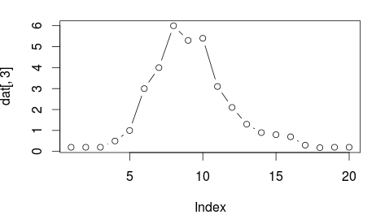
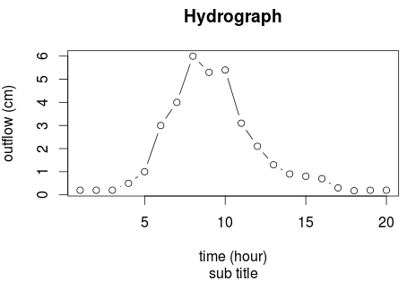
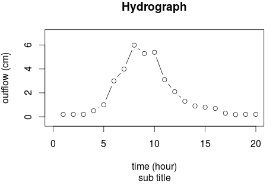
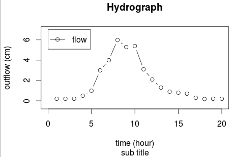
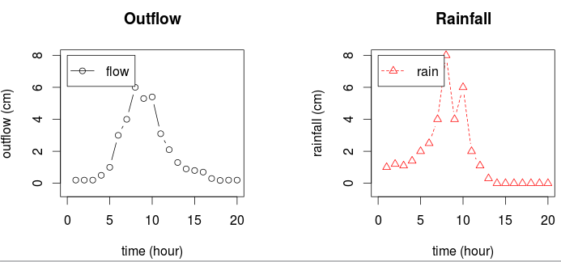
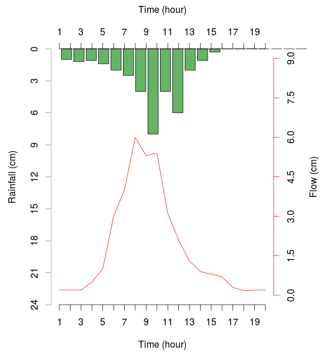
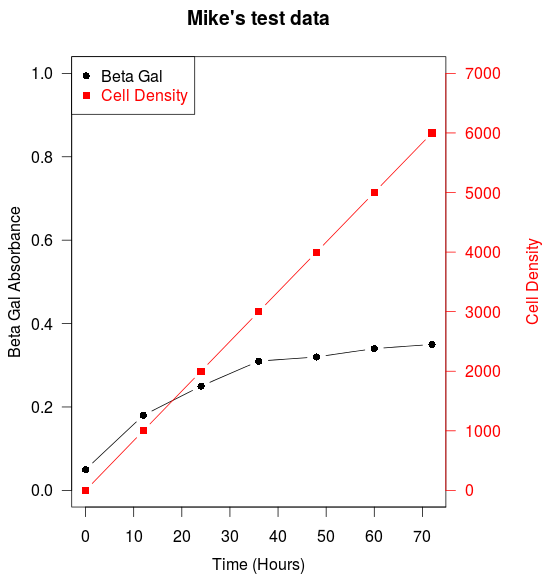
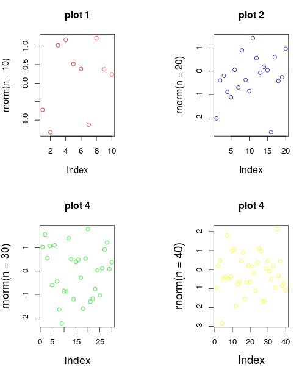
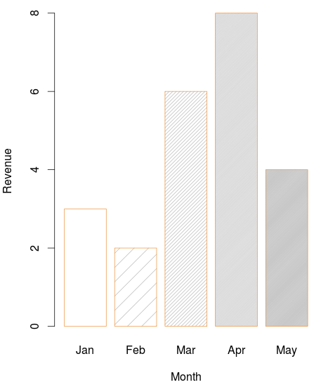
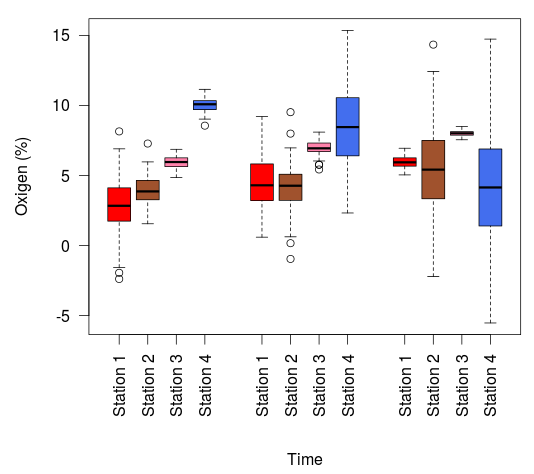

R에는 기본적으로 그래프 구현 도구를 제공한다. 기본으로 제공하는 패키지 말고도, CRAN에 다른 여러 사람들이 많은 그래픽 패키지가 있지만, 여기서는 가장 기본적인 그래프 구현방법을 알아보도록 한다.
이전에 사용했던 강우유출 데이터를 이용하여 그래프를 그려보도록 한다.
6주차의 코드에 이어 다음과 같은 명령어로 그래프를 나타낼 수 있다.
plot(dat[,3], type = "b")
type은 그래프의 형태를 나타내며 속성값은 아래와 같다.
type : what type of plot should be drawn. Possible types are
p : for points,
l : for lines,
b : for both,
c : for the lines part alone of ‘"b"’,
o : for both ‘overplotted’,
h : for ‘histogram’ like (or ‘high-density’) vertical lines,
s : for stair steps,
S : for other Steps, see ‘Details’ below,
n : for no plotting.

plot(dat[,3], type = "b", xlab = "time (hour)", ylab ="outflow (cm)",
main="Hydrograph", sub="sub title")
main : an overall title for the plot
sub : a sub title for the plot
xlab : a title for the x axis
ylab : a title for the y axis

plot(dat[,3], type = "b", xlab = "time (hour)", ylab ="outflow (cm)",
main="Hydrograph", sub="sub title", xlim=c(0,20), ylim=c(-0.5,7))
xlim : range of x axis
ylim : range of y axis

legend(0, max(dat[,3])+1, "flow", pch=1, lty=1)
0 : x 좌표 위치
max(dat[,3])+1 : y 좌표 위치
"flow" : 그래프 이름
pch=1 : pont character
lty : line type

par(mfrow=c(1, 2))
plot(dat[,3], type = "b", xlab = "time (hour)", ylab ="outflow (cm)",
main="Outflow", xlim=c(0,20), ylim=c(-0.5,max(dat[,2:3])))
legend(0, max(dat[,2:3]), "flow", pch=1, lty=1);
plot(dat[,2], type = "b", xlab = "time (hour)", ylab ="rainfall (cm)",
main="Rainfall", xlim=c(0,20), ylim=c(-0.5,max(dat[,2:3])), pch=2, lty=2, col="red")
legend(0, max(dat[,2:3]), "rain", pch=2, lty=2, col="red");
par : 그래픽에 관련된 변수들을 제어한다. mfrow=c(1,2) : 레이아웃을 1행 2열로 나눈다.

par(mar=c(5, 5, 5, 5) ) # to give a little more room for constructing the on the four side.
barplot(dat[,2], xlim=c(0,20), ylim=c(max(dat[,2])*3,0), col=c(rgb(0.4,0.7,0.4)), axes=FALSE, ylab="")
axis(2, at=0:max(dat[,2])*3, col=rgb(0.4,0.7,0.4)) # y axis left
par(new=TRUE)
plot(dat[,3], type="l",col="red", ylim=c(0,max(dat[,3])*1.5),axes=FALSE, ylab="", xlab="")
axis(1, at=1:nrow(dat)) # x axis bottom
axis(3, at=1:nrow(dat)) # x axis top
axis(4, at=0:max(dat[,3])*1.5, col="red") # y axis right
mtext(side = 1, line = 3, "Time (hour)")
mtext(side = 2, line = 3, "Rainfall (cm)")
mtext(side = 3, line = 3, "Time (hour)")
mtext(side = 4, line = 3, "Flow (cm)")

## set up some fake test data
time <- seq(0,72,12)
betagal.abs <- c(0.05,0.18,0.25,0.31,0.32,0.34,0.35)
cell.density <- seq(0,6000,1000)
## add extra space to right margin of plot within frame
par(mar=c(5, 4, 4, 6) + 0.1)
## Plot first set of data and draw its axis
plot(time, betagal.abs, pch=16, axes=FALSE, ylim=c(0,1), xlab="", ylab="",
type="b",col="black", main="Mike's test data")
axis(2, ylim=c(0,1),col="black",las=1) ## las=1 makes horizontal labels
mtext("Beta Gal Absorbance",side=2,line=2.5)
box()
## Allow a second plot on the same graph
par(new=TRUE)
## Plot the second plot and put axis scale on right
plot(time, cell.density, pch=15, xlab="", ylab="", ylim=c(0,7000),
axes=FALSE, type="b", col="red")
## a little farther out (line=4) to make room for labels
mtext("Cell Density",side=4,col="red",line=4)
axis(4, ylim=c(0,7000), col="red",col.axis="red",las=1)
## Draw the time axis
axis(1,pretty(range(time),10))
mtext("Time (Hours)",side=1,col="black",line=2.5)
## Add Legend
legend("topleft",legend=c("Beta Gal","Cell Density"),
text.col=c("black","red"),pch=c(16,15),col=c("black","red"))

## Set up plotting in two rows and three columns, plotting along rows first.
par(mfrow=c(2, 2))
## The first plot is located in row 1, column 1:
plot( rnorm(n=10), col = "red", main = "plot 1", cex.lab = 1.1 )
plot( rnorm(n=20), col = "blue", main = "plot 2", cex.lab = 1.2 )
plot( rnorm(n=30), col = "green", main = "plot 4", cex.lab = 1.3 )
plot( rnorm(n=40), col = "yellow", main = "plot 4", cex.lab = 1.4 )

x <- c(3,2,6,8,4)
barplot(x,border="tan2",
names.arg=c("Jan","Feb","Mar","Apr","May"),xlab="Month", ylab="Revenue",density=c(0,5,20,50,100))

data<-data.frame(Stat11=rnorm(100,mean=3,sd=2),
Stat21=rnorm(100,mean=4,sd=1),
Stat31=rnorm(100,mean=6,sd=0.5),
Stat41=rnorm(100,mean=10,sd=0.5),
Stat12=rnorm(100,mean=4,sd=2),
Stat22=rnorm(100,mean=4.5,sd=2),
Stat32=rnorm(100,mean=7,sd=0.5),
Stat42=rnorm(100,mean=8,sd=3),
Stat13=rnorm(100,mean=6,sd=0.5),
Stat23=rnorm(100,mean=5,sd=3),
Stat33=rnorm(100,mean=8,sd=0.2),
Stat43=rnorm(100,mean=4,sd=4)
)
boxplot(data,
ylab ="Oxigen (%)",
las = 2,
col = c("red","sienna","palevioletred1","royalblue2",
"red","sienna","palevioletred1","royalblue2",
"red","sienna","palevioletred1","royalblue2"),
at = c(1,2,3,4, 6,7,8,9, 11,12,13,14),
par(mar = c(12, 5, 4, 2) + 0.1),
names = c("Station 1","Station 2","Station 3","Station 4",
"Station 1","Station 2","Station 3","Station 4",
"Station 1","Station 2","Station 3","Station 4")
)
mtext(side = 1, line = 6, "Time")
